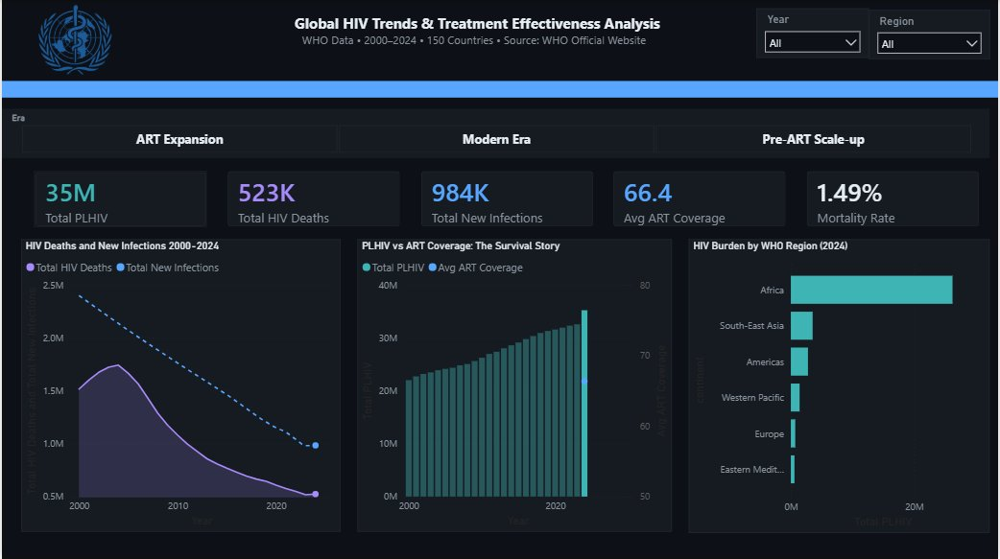
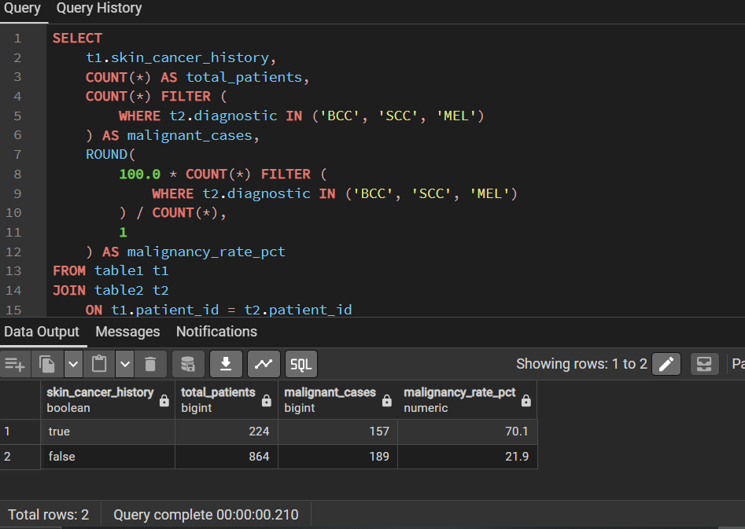
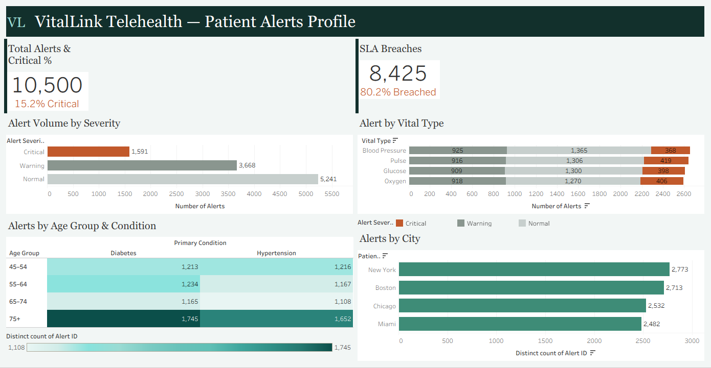
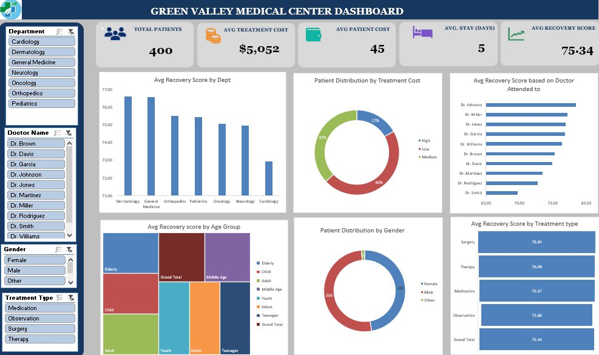

I turn clinical and operational data into decisions that protect patients.
Registered Mental Health Nurse and Power BI / SQL analyst, building dashboards that hold up to how healthcare data actually works.
Four projects, four different tools

Global HIV treatment effectiveness
Power BIA 25-year, 150-country data model showing why rising case counts are a survival signal, not a worsening epidemic, and which countries need urgent treatment investment.
Read the case study →
DORI skin cancer risk intelligence
SQLA relational analysis of 1,088 patients and lesion records in PostgreSQL, identifying which clinical, lifestyle and environmental factors were associated with malignant diagnoses.
Read the case study →
VitalLink telehealth alert response dashboard
TableauA two-page Tableau dashboard on 10,500 telehealth alerts, showing where clinicians were slow to respond and whether device battery or connection type explained warning alerts.
Read the case study →
Hospital patient dashboard
ExcelAn earlier project analysing 400 patient records in Excel, built into an interactive dashboard tracking recovery, cost, and department performance.
Read the case study →A nurse who learned to build the dashboard herself
Most healthcare dashboards are built by people who have never worked a shift on a ward. I have, in CAMHS, acute mental health, and crisis services, and that's exactly what shapes how I model data, choose KPIs, and decide what a clinical team actually needs to see first.